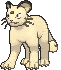

x4
x4
 x3
x3 x3
x3 x2
x2 x2
x2 x2
x2
 x4
x4 x2
x2![Boss's Orders [Ghetsis]](./assets/654453_bosss-orders-ghetsis.jpg) x2
x2 x2
x2
 x4
x4 x4
x4 x4
x4 x2
x2
 x2
x2 x2
x2 x9
x9 x2
x2
 Shadow Syndicate
Shadow Syndicate 

Game night hybrid · Mega Gengar ex and Team Rocket's Crobat ex in one Darkness shell
← back to all decksTwo Darkness Stage 2 lines share one engine, and the engine costs nothing extra.
Gastly and Team Rocket's Zubat are both Basic, both Darkness, and both sit under the 70 HP cap on Buddy-Buddy Poffin. Both lines top out at a Stage 2. Both get there off the same Rare Candy, the same Dawn, the same Ultra Ball. Running the second line costs you seven card slots and zero Trainers.
What you get back is three things your Dark Box does not have.
A second weakness. Every attacker in Gengar Gang and Dark Box is Fighting weak. Fox's Ground Zero doubles into all of it. Team Rocket's Crobat ex is Lightning weak with 310 HP, so Gaia Wave hits it for 200 and does not kill it.
Free chip damage. Biting Spree puts 2 damage counters on each of two of his Pokémon every time Crobat comes down from your hand. Assassin's Return puts Crobat back in your hand, so it comes down again. That is a repeating 40 damage that ignores the Active Spot entirely.
A body that heals. Assassin's Return discards Crobat's damage along with its Energy. A Crobat sitting at 200 damage becomes a fresh card in your hand.
And Shadowy Concealment covers all of it, because Team Rocket's Crobat ex, Golbat, and Zubat are Darkness Pokémon. The tax applies to the whole board.
x4x3x3x2x2x2x4x2x2x2x4x4x4x2x2x2x9x2Pokémon (18)
| Qty | Card | Set | Number | Reg |
|---|---|---|---|---|
| 4 | Gastly | Phantasmal Flames | 054 | I |
| 1 | Haunter | Perfect Order | 049 | J |
| 3 | Mega Gengar ex | Phantasmal Flames | 056 | I |
| 3 | Team Rocket's Zubat | Destined Rivals | 120 | I |
| 2 | Team Rocket's Golbat | Destined Rivals | 121 | I |
| 2 | Team Rocket's Crobat ex | Destined Rivals | 122 | I |
| 2 | Seviper | Phantasmal Flames | 062 | I |
| 1 | Sableye | Phantasmal Flames | 059 | I |
Trainers (30)
| Qty | Card | Type | Set | Number | Reg |
|---|---|---|---|---|---|
| 4 | Lillie's Determination | Supporter | Mega Evolution | 119 | I |
| 2 | Dawn | Supporter | Phantasmal Flames | 087 | I |
| 2 | Boss's Orders | Supporter | Mega Evolution | 114 | I |
| 2 | Team Rocket's Proton | Supporter | Destined Rivals | 177 | I |
| 1 | Team Rocket's Giovanni | Supporter | Destined Rivals | 174 | I |
| 4 | Buddy-Buddy Poffin | Item | Temporal Forces | 144 | H |
| 4 | Ultra Ball | Item | Mega Evolution | 131 | I |
| 4 | Rare Candy | Item | Mega Evolution | 125 | I |
| 2 | Night Stretcher | Item | Shrouded Fable | 061 | H |
| 1 | Mega Signal | Item | Mega Evolution | 121 | I |
| 2 | Punk Helmet | Tool | Phantasmal Flames | 092 | I |
| 2 | Risky Ruins | Stadium | Mega Evolution | 127 | I |
Energy (12)
| Qty | Card | Set | Number | Reg |
|---|---|---|---|---|
| 9 | Basic Darkness Energy | Mega Evolution Energies | 007 | - |
| 2 | Team Rocket's Energy | Destined Rivals | 182 | I |
| 1 | Legacy Energy | Twilight Masquerade | 167 | H |
18 + 30 + 12 = 60. ✓
Basics: 10 (4 Gastly, 3 Team Rocket's Zubat, 2 Seviper, 1 Sableye). That sits in the 75-85% band for opening with something playable, and every one of the ten is Darkness, which matters for the Stadium below.
Core line, Gengar. 4 Gastly, 1 Haunter, 3 Mega Gengar ex. Rare Candy jump. The single Haunter is the backup route when Candy is prized or stuck, and Haunt placing 3 counters for one Energy is real chip on a turn you cannot attack with anything else.
Core line, Rocket. 3 Zubat, 2 Golbat, 2 Crobat ex. Thicker on the Stage 1 than the Gengar line, because Sneaky Bite does work on the way up and because you re-evolve Crobat over and over. Rare Candy still jumps Zubat straight to Crobat ex, and Biting Spree still triggers, since Rare Candy evolves.
Damage dealer. 2 Seviper. 120 HP, single Prize, and 240 damage while any Darkness Mega Evolution ex is in play. Mega Gengar ex on the Bench is enough. This is the card that wins Prize races.
Early attacker. 1 Sableye. Cocky Claw for one Energy hits 90 the moment any Stage 2 Darkness Pokémon is on your Bench, and both of your Stage 2s qualify.
Search. 4 Buddy-Buddy Poffin grabs Gastly and Zubat two at a time. 4 Ultra Ball finds anything. 2 Dawn fetches an entire line in one card. 1 Mega Signal finds Mega Gengar ex when it is the missing piece. 2 Team Rocket's Proton is the only card here you can play on your first turn going first, and it puts three Zubat in your hand.
Draw. 4 Lillie's Determination, and 8 cards off it while you still have all six Prizes.
Gust. 2 Boss's Orders. 1 Team Rocket's Giovanni pulls double duty when a Rocket Pokémon is Active, switching your own attacker and dragging one of theirs up in the same card.
Recovery. 2 Night Stretcher. Note it retrieves Pokémon and basic Energy only. Team Rocket's Energy and Legacy Energy are gone once discarded.
Tool. 2 Punk Helmet. 4 damage counters back at anything that hits your Active Darkness Pokémon, and it fires even when the Pokémon dies.
Stadium. 2 Risky Ruins. Every Basic Pokémon in this deck is Darkness, so this Stadium is entirely one-sided. It taxes their Bench and never yours.
Energy. 9 basic Darkness carries Mega Gengar's  and Seviper's . 2 Team Rocket's Energy each pay for a full Assassin's Return on their own. 1 Legacy Energy is the ACE SPEC.
and Seviper's . 2 Team Rocket's Energy each pay for a full Assassin's Return on their own. 1 Legacy Energy is the ACE SPEC.
Staples are covered card by card in Gengar Gang Classic and Dark Box. This section is the new material.

 Darkness
Darkness Lightning ×2
Lightning ×2 Fighting -30
Fighting -30 1
1 legal (Reg I)Assassin's Return (120) - You may put this Pokémon into your hand. (Discard all cards attached to this Pokémon.)
legal (Reg I)Assassin's Return (120) - You may put this Pokémon into your hand. (Discard all cards attached to this Pokémon.)The hybrid's whole argument in one card. 310 HP on a Stage 2 that gives up 2 Prizes, weak to Lightning rather than Fighting.
for 120, then optionally back to your hand with everything attached discarded. The damage on it goes to the discard too.The bounce is a heal, an escape, and a reset of Biting Spree all at once. The cost is the Energy, so bounce off basic Darkness when you plan to do it, and save Team Rocket's Energy for turns you intend to stay.

 DarknessLightning ×2Fighting -301legal (Reg I)Confuse Ray (30) - Your opponent's Active Pokémon is now Confused.
DarknessLightning ×2Fighting -301legal (Reg I)Confuse Ray (30) - Your opponent's Active Pokémon is now Confused.Sneaky Bite puts 2 damage counters on one of their Pokémon when you evolve into it. Free, and it stacks with everything else on this page. 80 HP means it does not want to be Active.

 DarknessLightning ×2Fighting -301legal (Reg I)Poison Spray - Your opponent's Active Pokémon is now Poisoned.
DarknessLightning ×2Fighting -301legal (Reg I)Poison Spray - Your opponent's Active Pokémon is now Poisoned.50 HP, so Buddy-Buddy Poffin gets it. Poison Spray costs one Darkness and needs no damage roll, which is occasionally the right turn-one play.

 DarknessFighting ×21legal (Reg I)Pitch-Black Fangs (120)
DarknessFighting ×21legal (Reg I)Pitch-Black Fangs (120)Excited Power reads "in play," not "Active." Mega Gengar ex on the Bench turns Pitch-Black Fangs into 240 damage for one Prize. This is the best trade available to you and the reason the Mega is worth building even on turns it never attacks.
legal (Reg I)The one Supporter in this deck you may play on your first turn when you go first. It only finds Basic Team Rocket's Pokémon, which here means Zubat, and that is exactly the piece that is hardest to draw naturally.

legal (Reg I)A gust and a self-switch in one card, gated on your Active being a Team Rocket's Pokémon. Perfect for the turn Crobat is stuck Active and you want Seviper in front instead.
 Energy and Energy.legal (Reg I)
Energy and Energy.legal (Reg I)Provides 2 Energy in any mix of Psychic and Darkness, and attaches only to Team Rocket's Pokémon. One card fully pays for Assassin's Return. It cannot go on Gengar, Seviper, or Sableye, and Night Stretcher cannot get it back.
 legal (Reg I)
legal (Reg I)Places 2 damage counters on any Basic non-Darkness Pokémon a player benches during their turn. Your ten Basics are all Darkness, so you are exempt and Fox is not. It does not trigger on the opening setup, only on Bench drops made during a turn, which in practice means every Poffin, Nest Ball, and hand drop he makes for the rest of the game.

 ACE SPEC Rarelegal (Reg H)
ACE SPEC Rarelegal (Reg H)Provides one Energy of any type, and takes one Prize away from whoever knocks out the Pokémon holding it, once per game. Stacking it with Shadowy Concealment is the point. See the Prize map.

Shadowy Concealment removes 1 Prize when one of your Darkness Pokémon is knocked out by an attack from an opponent's Pokémon ex. Legacy Energy removes 1 Prize when its holder is knocked out by any attack, once per game. They are separate effects and they stack.
| Your Pokémon | Base Prizes | Under Concealment | Plus Legacy Energy |
|---|---|---|---|
| Seviper, Sableye | 1 | 0 | 0 |
| Team Rocket's Golbat, Zubat, Gastly, Haunter | 1 | 0 | 0 |
| Team Rocket's Crobat ex | 2 | 1 | 0 |
| Mega Gengar ex | 3 | 2 | 1 |
Read the trigger literally. Concealment needs the attacker to be a Pokémon ex. Against a single-prize attacker it does nothing, and against Fox's Charizard deck it is blank. Against Ground Zero and against his Team Rocket's Mewtwo build it is on for the entire game.
The shape you want is his six Prizes coming two at a time while yours come one at a time. A Seviper that trades into a Mega Zygarde ex takes 3 Prizes and gives back 0.
| Source | Cost | Damage |
|---|---|---|
| Mega Gengar ex, Void Gale | | 230, and moves 1 Energy to your Bench |
| Seviper, Pitch-Black Fangs with a Darkness Mega in play | | 240 |
| Team Rocket's Crobat ex, Assassin's Return | | 120 |
| Sableye, Cocky Claw with a Stage 2 Darkness benched | | 90 |
| Haunter, Haunt | | 30, placed as counters |
| Biting Spree on evolve | free | 20 + 20, any two targets |
| Sneaky Bite on evolve | free | 20, any target |
| Punk Helmet | free | 40 back at the attacker |
| Risky Ruins | free | 20 per non-Darkness Basic they Bench |
The chip is what turns a two-shot into a one-shot.
| Target | HP | The line |
|---|---|---|
| Team Rocket's Mewtwo ex | 280 | Seviper 240 + Biting Spree 40. Exactly lethal. |
| Flareon ex | 270 | Seviper 240 + Biting Spree 40 = 280. |
| Mega Zygarde ex | 310 | Void Gale 230 + Biting Spree 40 + Sneaky Bite 20 + Risky Ruins 20. |
| Charizard (Vivid Voltage) | 170 | Sableye twice, or Seviper once. |
| Fezandipiti ex | 210 | Void Gale 230 outright. |
Bench Gastly and Zubat off one Buddy-Buddy Poffin. Turn two, Rare Candy whichever line matches the board. Candy into Crobat ex when you want the Biting Spree damage now; Candy into Mega Gengar ex when you want Seviper switched on.
Void Gale moves an Energy from Gengar to your Bench every time it attacks. Point it at Seviper. Three Void Gales fully arm a Seviper without a single manual attachment going there, and Seviper is hitting 240 the whole time because Gengar is the thing enabling it.
Evolve Crobat, spread 40. Attack for 120 and bounce it back to hand. Next turn evolve a fresh Golbat or Rare Candy a fresh Zubat, spread another 40. Each cycle is 160 damage and gives up nothing, because the card that would have been knocked out is sitting in your hand.
Two constraints. You need a Zubat or Golbat waiting each time, so keep the Bench stocked. And the bounce discards attached Energy, so pay with basic Darkness on loop turns.
When something hits Crobat for a lot and does not kill it, Assassin's Return deletes the damage. 310 HP means most single attacks in this house leave it alive, and a survivor in your hand is worth more than a survivor on the board.

90 damage for one Energy as soon as any Stage 2 Darkness is benched. That is a dead Charmander, a dead Eevee, or a dead Zubat while your real board comes together.

The reason the Rocket half exists. Gaia Wave is 200 damage and doubles against everything with a Fighting weakness, which is your whole Gengar side.

Nearly all ex attackers, so Concealment is live for the entire game. Erasure Ball caps at 280 and cannot one-shot Mega Gengar ex. Seviper plus two Biting Spree counters kills Mewtwo on the nose. Watch for the mirror problem on Team Rocket's Energy and the Crobat line if you are both drawing from the same box.


Concealment does less here because more of his attackers are single-prize, and against Charizard it does nothing at all. Win this one on damage instead. Seviper clears 270 with any chip attached, and Risky Ruins punishes his Bench-heavy setup turns.
Almost nothing. This is built from what is already in the box.
| Card | Own | Need | Buy | Note |
|---|---|---|---|---|
| 3 | 3 | ✓ | third copy, or play one of the two japanese MBG prints instead |
| 2 | 3 | 1 | common, third copy |
| 0 | 1 | 1 | the ace spec, or swap in the japanese Prime Catcher you already own |
| Total to buy | 2 |

Three things to watch, and the exact ratio each one points at.
Crobat runs out of Zubat. If the loop stops because there is nothing left to evolve, the Rocket line is too thin. Go to 4 Zubat and 3 Golbat, cutting the Haunter and one Basic Darkness. This is the most likely problem.
Seviper sits at two Energy. If Pitch-Black Fangs is a turn late every game, the Energy river is not running. Add 2 Energy Switch over 1 Night Stretcher and 1 Punk Helmet, or add the Toxel and Toxtricity line from Dark Box if you want real acceleration and are willing to cut four Trainer slots for it.
Giovanni is dead in hand. If your Active is Gengar or Seviper most turns, that card never fires. Make it a third Boss's Orders.
Two smaller notes. If you draw Biting Spree damage but never convert it into a knockout, you are short on gust and want the third Boss's Orders regardless. And if Risky Ruins is getting bumped off by his Stadium every turn, the second copy is doing its job, so leave it alone.